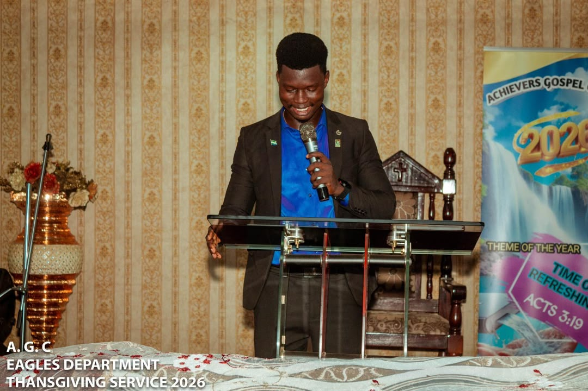
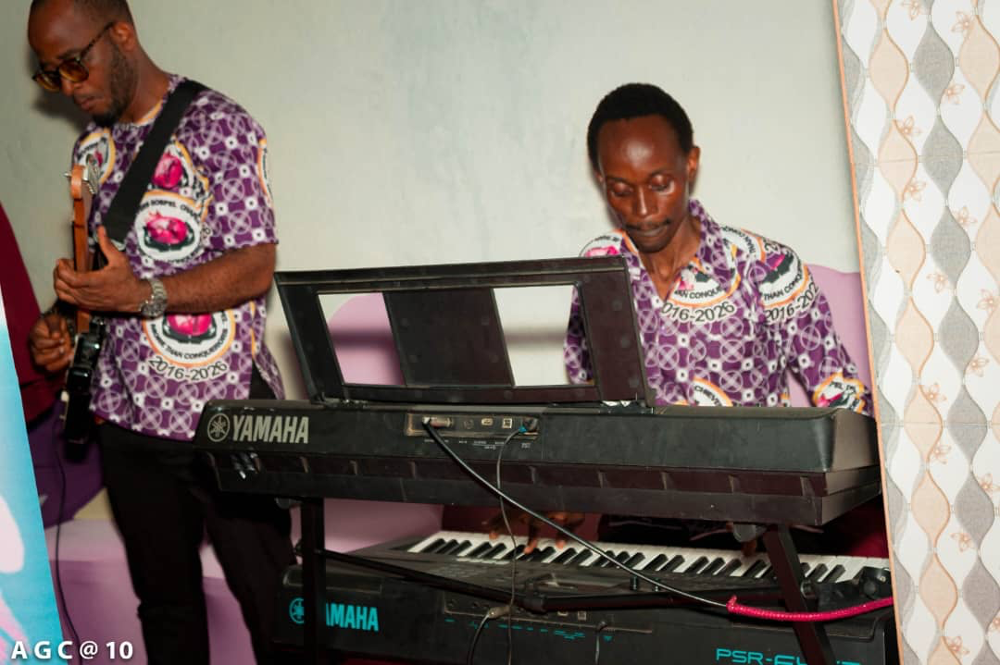

Elder Catherine Y. Yamba
Church ElderA faithful servant of God who provides spiritual oversight and wisdom to the congregation.
ContactGod-appointed, Spirit-filled leaders who shepherd Achievers Gospel Chapel with love, wisdom, and integrity.
"My passion is to see every soul liberated by the power of the gospel and every believer standing firm in the faith."
Rev. Eustace Samuels is the founder and senior pastor of Achievers Gospel Chapel. Called by God from an early age, he has dedicated his life to the proclamation of the gospel of Jesus Christ across Sierra Leone and beyond. His ministry is characterised by deep intercessory prayer, powerful preaching, and a genuine love for people.
Under his visionary leadership, Achievers Gospel Chapel has grown from a small gathering into a vibrant multi-generational church with numerous active ministries, outreach programmes, and community impact initiatives.
Rev. Samuels believes firmly in the power of God to heal, deliver, and transform lives — and countless testimonies across the congregation affirm this conviction.
"Every woman has a destiny. Every child has a future. Every family can be restored. I am here to walk alongside you in that journey."
Rev . (Mrs) Victoria Samuels serves alongside her husband as Co-Senior Pastor of Achievers Gospel Chapel. A gifted teacher, mentor, and spiritual mother, she carries a special burden for women, families, and the next generation.
Her ministry to women and children has impacted countless lives, providing spiritual guidance, practical support, and a safe community for those going through difficult seasons. She leads the Women's Department with wisdom and compassion, helping women discover their identity, purpose, and potential in Christ.
Rev. Mrs. Samuels is a firm believer that the family is the bedrock of society and invests deeply in family ministry and counselling within the church and community.
Seasoned spiritual leaders who provide godly counsel, accountability, and governance to the church.
A faithful servant of God who provides spiritual oversight and wisdom to the congregation.
ContactDedicated to prayer, the Word, and the spiritual health of the entire congregation.
ContactBrings years of experience and spiritual maturity to guide the church in difficult decisions.
ContactA devoted servant of God who leads the Men's Department and oversees the Media and Technical ministries of the church with excellence and dedication.
ContactOrdained and licensed ministers who assist in preaching, teaching, and pastoral care.
Gifted in teaching and discipleship, this minister serves the congregation with passion and dedication.
ContactCalled to serve the community and empower members through scholarship and educational initiatives.
ContactA devoted man of God leading the Men's Department with strength, purpose, and a passion for raising godly men.
ContactOrdained to spread the gospel beyond the church walls, leading evangelism and mission outreach across Sierra Leone.
Contact
A gifted minister and medical professional dedicated to the spiritual and physical wellbeing of the congregation.
ContactGifted musicians leading the congregation in Spirit-filled worship.
A talented musician and leader who directs the Choral Assembly with excellence and passion for worship.
ContactA gifted worship leader who leads the Achievers Gospel Choir with skill, dedication and a heart for God.
Contact
An anointed choir director who brings out the best in the Achievers Gospel Choir through musical excellence.
Contact